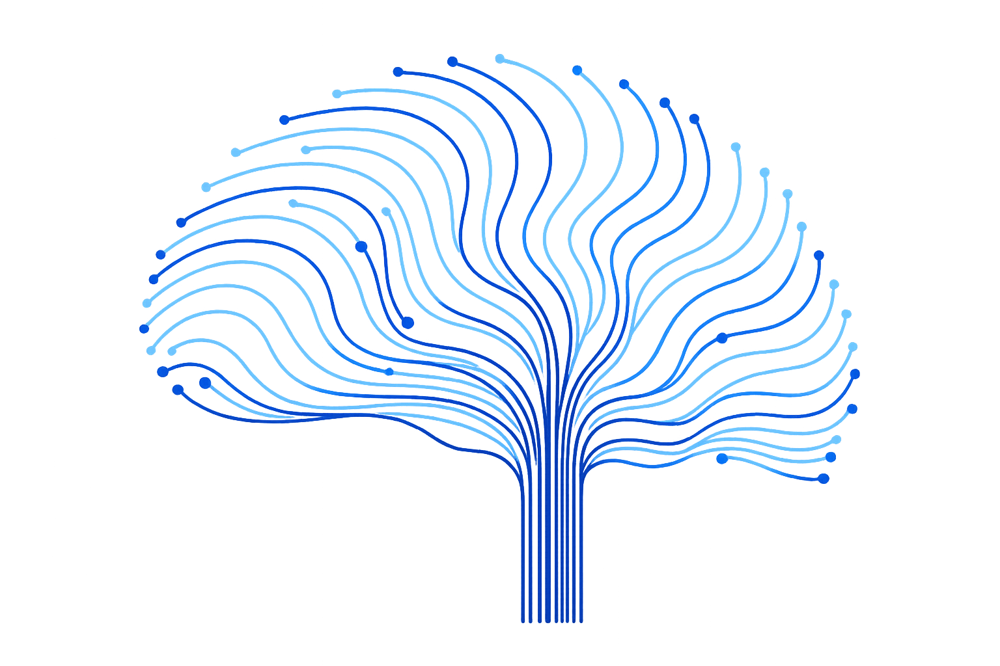
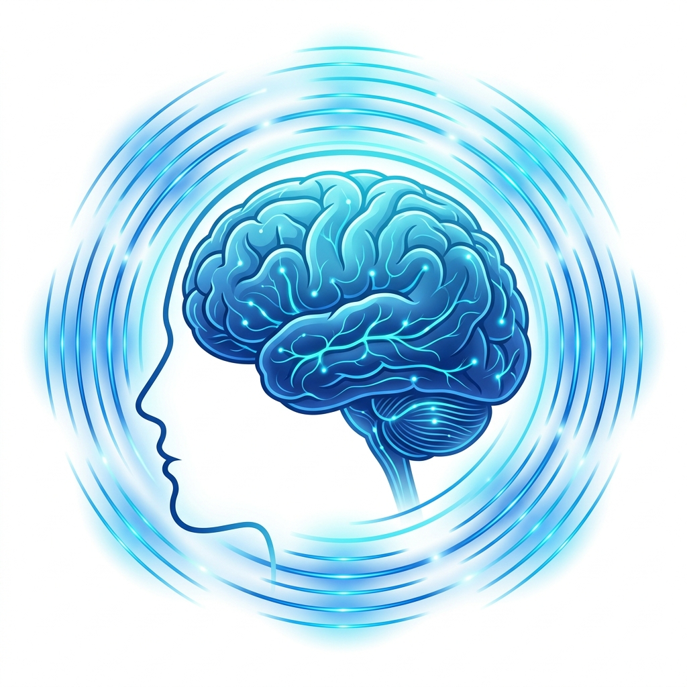
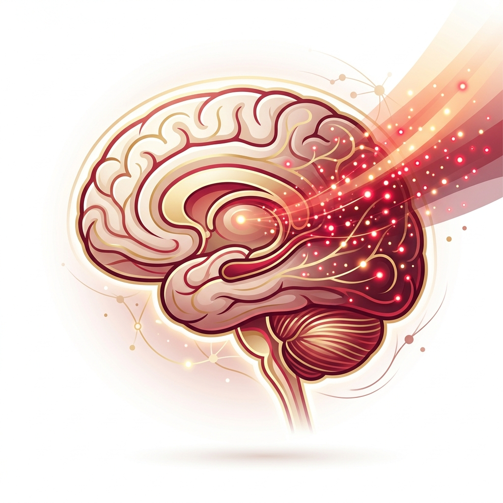
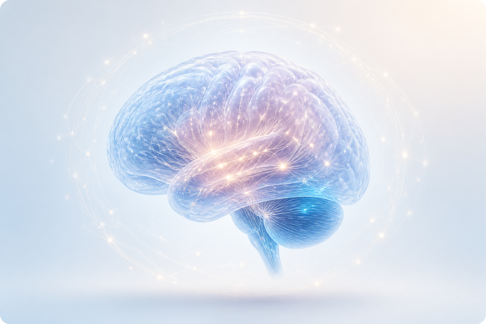
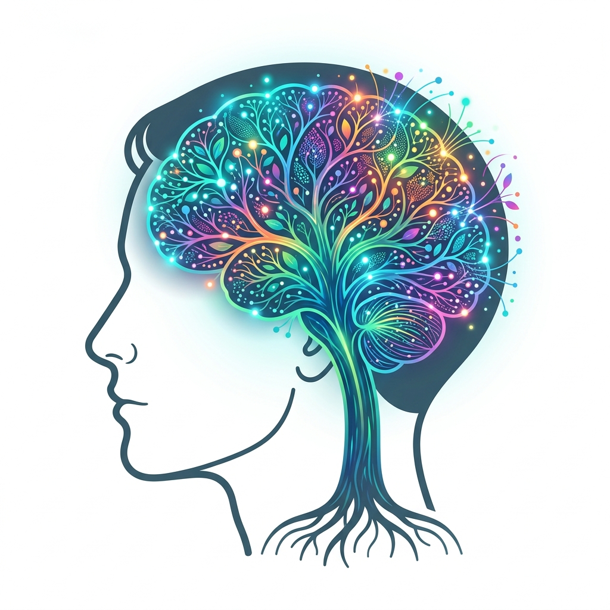

We begin with a qEEG brain map to see how your brain is functioning. This helps us connect symptoms to measurable brain activity and build a clearer picture of what is happening.
PERSONALIZED Neurofeedback and QEEG Brain Mapping
Support for Focus,
Support for Focus,
Sleep & Brain Wellness
Personalized Neurofeedback and QEEG, QEEG brain mapping, and brain wellness care for children, adults, and older adults in New York City.
Drug-FreeSafe & Non-invasive
Evidence-BasedClinically Proven
Personalized CareTailored for You
Track ProgressSee Real Results
At NY Psychology & Neurofeedback and QEEG, we’re dedicated to helping you find relief from depression, anxiety, and much more. As an internationally certified practice led by BCIA Board Certified and IQCB Certified professionals, we specialize in Personalized Neurotherapy and Talk Therapy to provide lasting support so you can feel like yourself again.

Your journey to a clearer plan starts here.
Book A Consultation
Our method
Three simple steps to better wellness
We use a clear, science-led process to understand your brain, build a personalized plan, and track progress with care that feels calm, modern, and easy to follow.
QEEG Brain Mapping
Personalized Plan
Progress Tracking
Who we are.
Then we analyze the data and create a personalized Neurofeedback and QEEG strategy based on your brain patterns, your goals, and the concerns you want to address.
During each session, you work through a gentle training program that supports better regulation and helps track progress over time in a calm office setting.
Our Modalities
Neurofeedback and QEEG
Neurofeedback and QEEG sessions typically involve using EEG-based feedback—such as sounds or images—to gently guide the brain toward more balanced activity. It’s rooted in operant conditioning, an automatic form of learning that happens without conscious effort. As you watch a preferred movie or listen to chosen music, the system rewards brainwave patterns that align with your QEEG profile, subtly encouraging healthier rhythms over time. While it’s not a direct “treatment,” research—such as a meta-analysis of controlled trials in ADHD—suggests this approach may help alleviate symptoms like inattention and impulsivity.

Neuromodulation
Neuromodulation is used to retrain dysfunctional brainwave patterns. This can help the brain heal by boosting blood flow, encouraging new blood vessel growth, and supporting the formation of new brain connections. We use pulsed Electromagnetic Field stimulation (pEMF), transcranial Alternating Current Stimulation (tACS), transcranial Direct Current Stimulation (tDCS), and transcranial Random Noise Stimulation (tRNS) to help you feel and perform your best.

Photobiomodulation (PBM)
Photobiomodulation (PBM) is a therapy that uses specific types of light, usually low-level lasers or LEDs, to stimulate cells. The light energy penetrates the skin and is absorbed by cells, particularly in the mitochondria—the “powerhouses” of the cell—helping them produce more energy. The PBM we use in our clinic has been shown to support conditions such as TBI, CTE, dementia, Alzheimer’s, PTSD, Parkinson’s, Autism Spectrum Disorder, and Long Covid. In addition to treating conditions, PBM has also been shown to enhance creative thought.

Our Population
From children to the elderly, we welcome all.
At NY Psychology & Neurofeedback and QEEG, we work with people facing a variety of challenges including autism spectrum disorder, addiction, anxiety, depression, neurological injury, memory and brain disorders, bipolar, depression, insomnia and sleep disorders, learning disabilities, post-traumatic stress, and more. We provide a compassionate, personalized, non-invasive treatment to address the underlying patterns affecting the individual.


Our Mission
At NY Psychology & Neurofeedback and QEEG, we are dedicated to helping you become your best self. Our caring team is built with your best interest at heart, so you can attain your goals. Led by Dr. Merlyn Hurd, with over 40 years of clinical experience, our treatment staff offers personalized treatment designed for your needs.
Questions about specific conditions? We’re here to help you find answers.
Getting Started